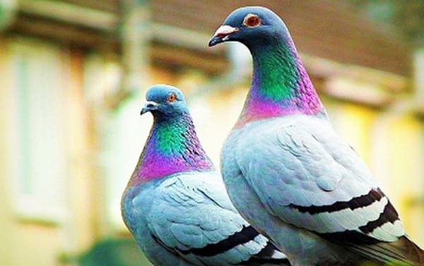
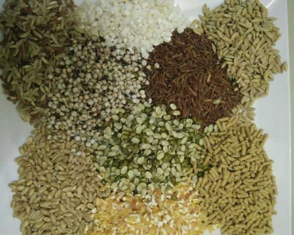

Chim bồ câu

Những đặc điểm cơ bản của chim bồ câu
Bồ câu là loài chim được phân bố rộng rãi trên khắp thế giới đặc
biệt là những vùng có khí hậu ôn hòa, khu vực sinh thái phát triển. Và ở Việt Nam cũng vậy,
giống chim này sinh sống trải dài từ Bắc vào Nam. Đây là một trong những loài chim được nhiều
người nuôi chim cảnh cũng như lựa chọn nuôi cho việc kinh doanh.
Có thể nhiều người sẽ không biết, chim bồ câu là loài động vật hằng nhiệt. Chim bồ câu có thân
hình thoi, cổ dài khá đặc biệt. Do vậy mà đầu của nó có thể xoay chuyển vô cùng linh hoạt. Hơn
nữa, chim bồ câu không có răng mà chỉ có sừng bao bọc quanh hàm cùng với mỏ cứng và sắc.
Chim bồ câu có màu lông không hề đồng nhất và phổ biến hơn cả là những màu như đen, trắng, nâu
và xanh nhạt. Ngoài ra, chúng còn nhiều cá thể biến dị màu lông như màu xanh nhạt, khoang, nâu
nhạt, xanh thẩm,...

Chim bồ câu ăn gì?
Chim bồ câu cũng giống như loài chim cu gáy, chúng đều rất thích ăn
các loại hạt, các loại ngũ cốc, đặc biệt là các loại hạt giàu protein. Thức ăn của chúng đa dạng
các loại hạt nhưng chủ yếu vẫn là: Gạo, ngô, các loại đậu, hướng dương, hạt kê, cao lương, bo
bo,... Khi nuôi chim không tốn kém về thức ăn như gà vịt, vì chúng ăn không nhiều.